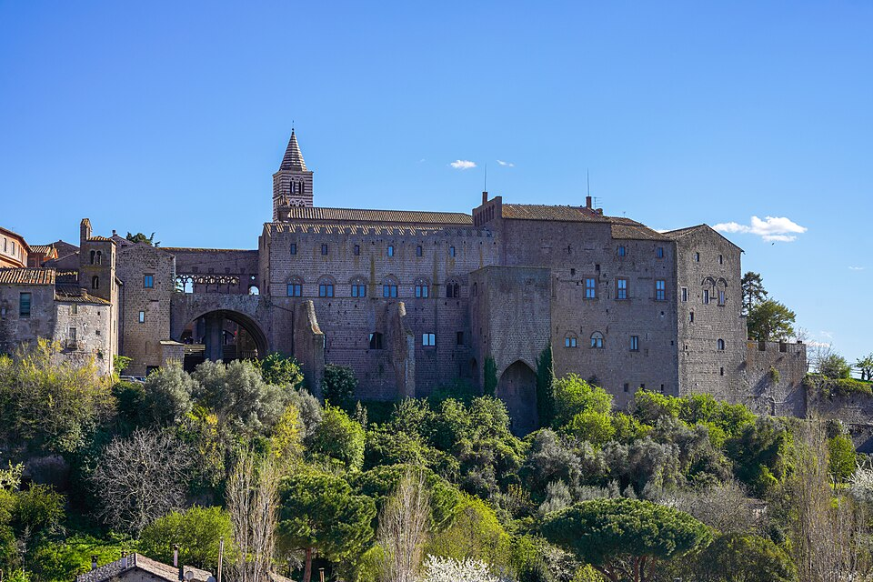
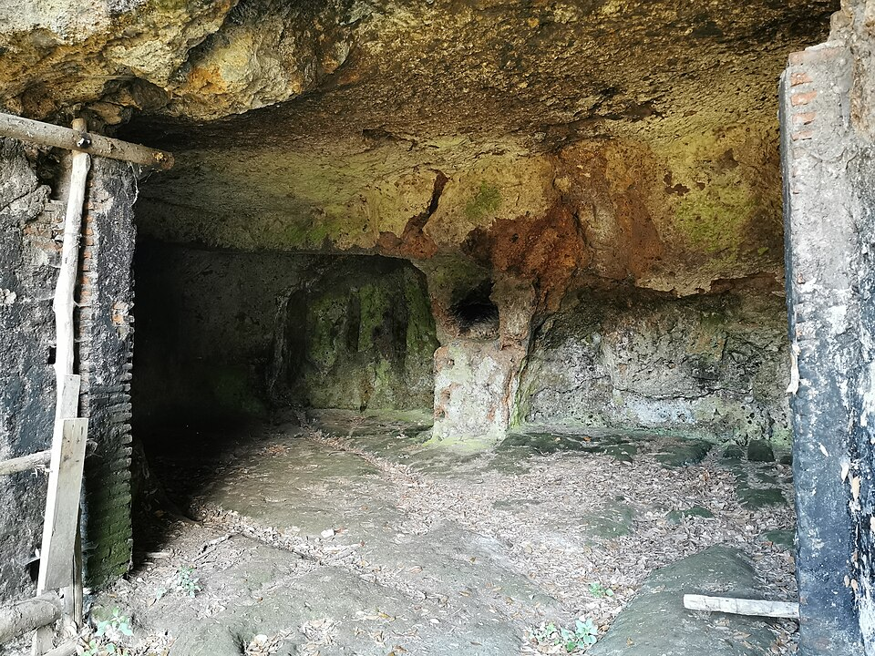
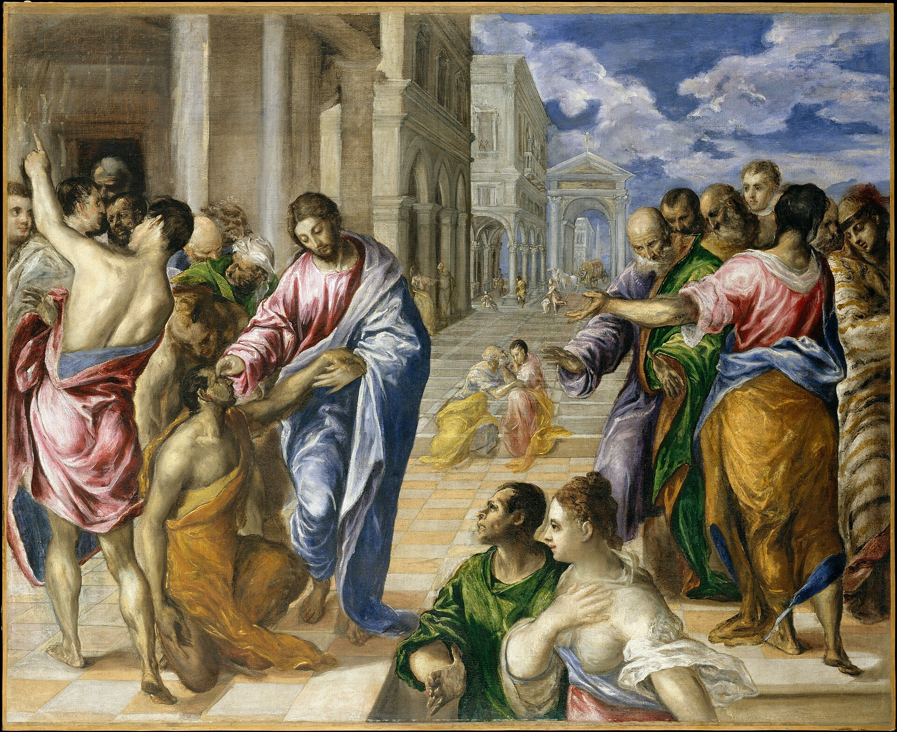

Terrain: the longest and hardest day — a stiff climb from the lake up to Montefiascone on its ridge, then the papal city of Viterbo, and a long undulating haul south through Vetralla to Sutri, the ancient gate of Etruria. Pace the whole day; the destination is worth arriving to fresh. Distance and ascent are measured from the day's GPS track.8
Today the road leans toward Rome and something in you leans with it. That forward-ache is not impatience to be treated as a fault; it is desiderium, the holiest of hungers — the restlessness Augustine says God planted in us so that nothing less than God would ever satisfy it. Do not silence the longing. Aim it.
I was glad when they said to me, “Let us go to the house of the Lord!” Our feet have been standing within your gates, O Jerusalem!
Psalm 122:1–2 · Revised Standard Version, Catholic Edition1
Psalm 122 is a pilgrim's song — one of the Songs of Ascents that Israel sang while climbing the roads up to Jerusalem — and it is written in two tenses at once. “I was glad when they said, let us go”: that is the joy of the setting-out, the gladness at the very invitation, days before arriving. And then, suddenly, present tense: “Our feet have been standing within your gates.” The pilgrim sings the arrival before it happens, because the longing is already a kind of possession. To ache for the house of the Lord is to have one foot inside its gate.
That is the strange grammar of desire that Augustine names in the most famous sentence he ever wrote. He spent years trying to still his restlessness with lesser things — ambition, cleverness, pleasure, applause — and found that each one, tasted, only sharpened the hunger it promised to end. The conclusion he came to was not that desire is the problem but that it was aimed too low. God, he decided, had made the human heart deliberately too large for anything created to fill, precisely so that the emptiness would keep driving us home. Your restlessness is not a malfunction. It is a compass.
Today you will feel this in the most literal way. It is the longest, hardest stage, and by the afternoon the only thing keeping the legs turning will be the town at the end of the road — the gladness of the destination pulling you forward through the fatigue of the present. That is the whole Christian life in miniature. We are people who “have been standing within the gates” in hope while our feet are still on the ridge in the heat. Rome is close now; the eternal City is closer. Let the longing do its proper work: not to make the road unbearable, but to make it meaningful. You were made for the gates. Ride toward them.
What lesser thing have I been asking to still a restlessness only God can still — and what would it mean today to aim the longing higher?
Today's route, Bolsena to Sutri. Map © CyclOSM / OpenStreetMap. Full elevation profile & all stages →
The morning's climb lifts you from the lake to Montefiascone on its ridge, with the crater of Bolsena spread out behind. Then the road runs down to Viterbo — and this is a city to slow for.

Photo: NikonZ7II (CC BY-SA 4.0) · Wikimedia CommonsFrom Viterbo the way runs south and undulating through Vetralla and the wooded tufa country, until the road climbs a last time to a plateau of soft volcanic rock — and there is Sutri, perched on its ridge, the ancient gate of Etruria and, for the pilgrim, the true threshold of Rome.

Photo: Luciano valle (CC BY-SA 4.0) · Wikimedia CommonsAnd they came to Jericho; and as he was leaving Jericho with his disciples and a great multitude, Bartimaeus, a blind beggar, the son of Timaeus, was sitting by the roadside… he began to cry out and say, “Jesus, Son of David, have mercy on me!” And many rebuked him, telling him to be silent; but he cried out all the more… And Jesus said to him, “What do you want me to do for you?” And the blind man said to him, “Master, let me receive my sight.”… And immediately he received his sight and followed him on the way.
Mark 10:46–52 · Revised Standard Version, Catholic Edition2

Bartimaeus is a pilgrim, though he is sitting still. Jesus is on the last road, going up from Jericho to Jerusalem to die, and the whole crowd is streaming past a blind man who cannot join the procession because he cannot see the way. So he does the only thing left to him: he turns his whole self into a longing and throws it after the Lord in a shout. “Son of David, have mercy on me!” The crowd tells him to be quiet — the world always tells naked desire to keep its voice down — and he does the opposite. He “cried out all the more.” Longing that will not be shamed into silence is the beginning of every arrival.
Then comes the tenderest question in the Gospels. Jesus stops the whole march, has the man called, and asks him — a blind beggar, obviously — “What do you want me to do for you?” It is not that Jesus does not know. It is that he will not treat a person as an object to be fixed. He makes Bartimaeus name the desire, out loud, in his own words, because the naming is part of the healing. And notice the last four words of the story, which are the whole point: healed, he “followed him on the way.” He does not go home cured. He gets up and walks the pilgrim road that Jesus is walking — the road to Jerusalem, to the cross, to the end that is a beginning.
Ask yourself his question tonight, on the last ridge before Rome. If Christ stopped the whole road and turned to you and said, “What do you want me to do for you?” — what would you dare to name? Not what you think you should say. What you actually, achingly want. Bartimaeus wanted to see, and what he saw first, with his new eyes, was the back of the Lord walking on ahead — so he followed. Arrival, for him, was not the end of the road. It was being given eyes to see whom to follow down it.
There we shall rest and see, see and love, love and praise. This is what shall be in the end without end.
Augustine, City of God XXII.30 (the final words) · trans. Marcus Dods4
You sleep tonight at the gate of Rome, and it is worth being honest about what that means — because Augustine wrote the vast City of God precisely to keep people from confusing Rome with the goal. He wrote it after Rome fell, when the sack of the eternal city in 410 had shattered everyone who had quietly believed that Rome was permanent, that Rome was the end of history, that to arrive there was to arrive. No, said Augustine. There are two cities, built by two loves, running through all of history intermixed: the earthly city, which loves itself, and the City of God, which loves God — and only one of them has walls that will still be standing at the end. Rome is a gate, not a home. Tomorrow you will ride through the real one and find, if you are wise, that it too points beyond itself.
And so the enormous book — twenty-two volumes, decades of labour — ends not with a monument but with a Sabbath. In its very last lines Augustine stops arguing and simply describes the arrival every human longing has been aimed at all along: the eternal rest of the City that has no end. Read the sentence again slowly, because it is built like a staircase, each word standing on the one before. Rest, first — the striving finally over. Then, out of the rest, sight: we shall see, at last, the One we have been travelling toward in the dark. Out of the seeing, love — for to see Him truly is to love Him. And out of the love, praise, which is love that has become song. Rest, sight, love, praise: the whole architecture of heaven in eleven words.
“This is what shall be in the end without end.” Hold on to that last phrase tonight. Every arrival you have ever known has been an ending — the journey over, the joy already beginning to fade. But the City Augustine describes is the one arrival that is not a stopping. It is an end without end: a destination you go on arriving at forever, a rest that is not idleness but the deepest activity of the soul, endlessly seeing and loving and praising and never once growing tired or bored or done. Tomorrow, Rome. But tonight, on this last ridge, lift your longing past the gate you can see to the City you cannot — the one you were made for, the one where the restless heart finally, and forever, reposes.
Every quotation is reproduced from the edition named; historical statements are drawn from the references below.